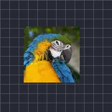

Desplazamiento aleatorio

Mueve la capa automáticamente de forma suave y aleatoria a lo largo del tiempo. Semilla elige un movimiento distinto, Velocidad indica con qué rapidez se desplaza y Evolución cambia el patrón.
Desplazamiento aleatorio mueve la capa de forma suave y aleatoria, como una cámara que se va desplazando. Magnitud indica cuánto se desplaza, Velocidad con qué rapidez y Semilla elige una trayectoria distinta. A diferencia de Sacudida automática, el movimiento es lento y fluido, no a saltos.
Ajustes
| Ajuste | Tipo | Rango | Predeterminado |
|---|---|---|---|
| Magnitud | Número | 0 a 2000 | 50 |
| Evolución | Número | 0 a 2000 | 0 |
| Semilla | Número | 0 a 5 | 0 |
| Dispersión | Número | 0% a 200% | 50% |
| Velocidad | Número | 0 a 50 | 1 |